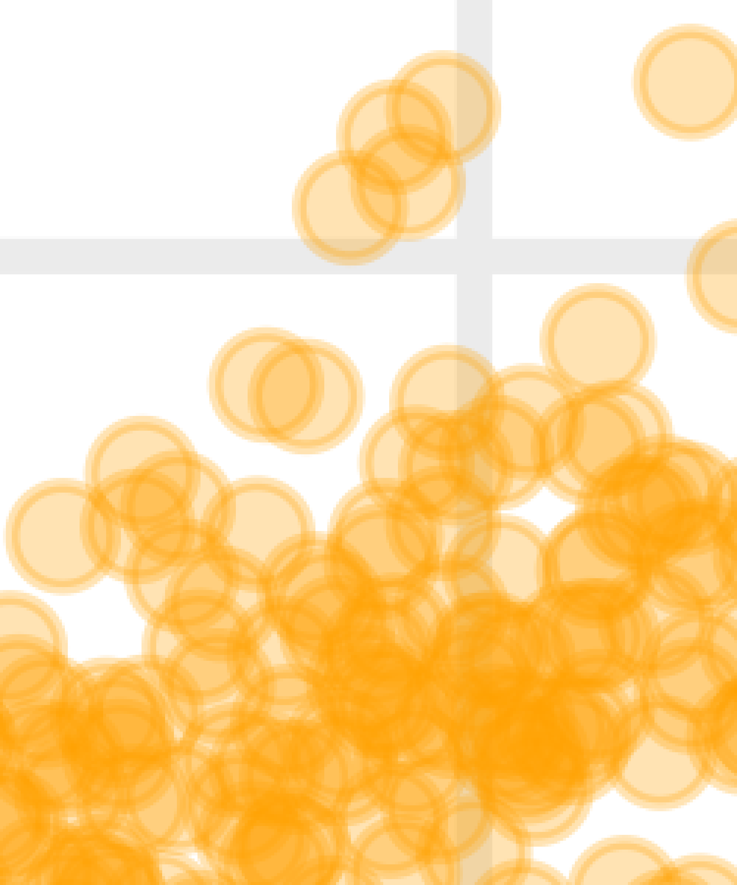

Engaging and Beautiful Data Visualizations with ggplot2
Fundamentals & Workflows

{ggplot2} is a system for declaratively creating graphics,
based on “The Grammar of Graphics” (Wilkinson 2005).
You provide the data, tell {ggplot2} how to map variables to aesthetics,
what graphical primitives to use, and it takes care of the details.

ggplot2 examples featured on ggplot2.tidyverse.org

Illustration by Allison Horst

Illustration by Allison Horst

Collection of Graphics from the BBC R Cookbook

Collection of Graphics from the BBC R Cookbook


“Netflix Content Explosion” by Tanya Shapiro

My reinterpreted The Economist graphic


“Popular Programming Languages in CRAN Packages” by Torsten Sprenger


“Artists in the US” by Lee Olney

My Contribution to the SWDchallenge “Small Multiples”

“European Energy Generation” by Jack Davison

Moon Charts as a Tile Grid Map showing the 2nd Vote Results from the German Election 2021

Our Winning Contribution to the BES MoveMap Contest

Bivariate Choropleth x Hillshade Map by Timo Gossenbacher
Pixel Art by Georgios Karamanis

Generative Art by Thomas Lin Pedersen


Plot Resolution



Modified from canva.com
The {ragg} Package

The {ragg} Package

The {ragg} Package

The {ragg} Package

The {ragg} Package
- use {ragg} when saving ggplots by passing agg device function:
ggsave(device = agg_png))(used by default if installed) - use {ragg} in the Rstudio Plots pane be setting the backend to AGG:

- use {ragg} when knitting Rmarkdown files by setting
dev="ragg_png"in the code chunk options.


Setting Plot Sizes in Quarto and Rmarkdown

Setting Plot Sizes in Quarto and Rmarkdown

Setting Plot Sizes via {camcorder}

Setting Plot Sizes via {camcorder}

Conditional Components

Conditional Components

Wrapper Functions for Plots

Components as Functions

Components as Functions

Iterative Graphics

Iterative Graphics

Iterative Graphics

Iterative Graphics

Combine Plots with {patchwork}

Combine Plots with {patchwork}

Combine Plots with {patchwork}

Combine Plots with {patchwork}

Combine Plots with {patchwork}